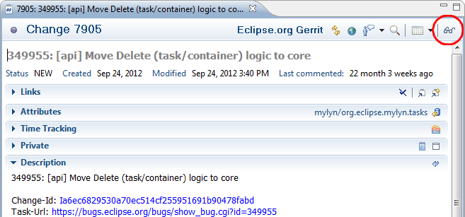

| Release | Resolved | Community Contributions |
| 3.12 June 25, 2014 |
49 bugs |
Community
contributions were provided by Gregory Amerson, Tim Cheung, Leo Dos Santos, James Kennedy, and Michael Keppler.
Includes: Mylyn 3.12, Mylyn Builds 1.4, Mylyn Commons 3.12, Mylyn Context 3.12, Mylyn Docs 2.1, Mylyn Reviews 2.3. Mylyn Tasks 3.12, Mylyn Versions 1.4. |
Also see the New & Noteworthy for: Mylyn 3.11, Mylyn 3.10, Mylyn 3.9, Mylyn 3.8, Mylyn 3.6, Mylyn 3.4, Mylyn 3.2, Mylyn 3.0, Mylyn 2.0, Mylyn 1.0-0.6, Mylyn 0.5, Mylyn 0.4, Mylyn 0.3
NOTE: Mylyn 3.12 requires Java 1.6 or later and supports Eclipse 3.8, 4.3 or 4.4. Eclipse 3.6 is now the base compilation target, so Mylyn no longer runs on Eclipse 3.5. See the download page for repository locations.
|
Toggle Focus Active View with Keyboard |
You can quickly focus or unfocus the active view by pressing Alt+Shift+H. The keybinding can be customized in the preferences. |
|
Jenkins 1.532.2 |
Jenkins 1.532.2 is now supported. |
|
Open Review Navigator from Task Editor |
The Gerrit task editor adds a toolbar button to make it easy open the Review Navigator for the current review.  |
|
|
|
|
Gerrit 2.8.5 |
Gerrit 2.8.5 is now supported. |
See porting guide for additional notes on API changes.
|
Tasks: Control Fetching of Subtasks |
To allow clients of the framework to control whether queries automatically fetch subtasks, SynchronizationJob and ITaskJobFactory now have setFetchSubtasks and getFetchSubtasks methods. bug 385670 |
|
|
|
|
Commons: Configure Maximum Number of Connections |
Clients can configure the maximum number of http connections (in total and per-host) using system properties. bug 417451 |